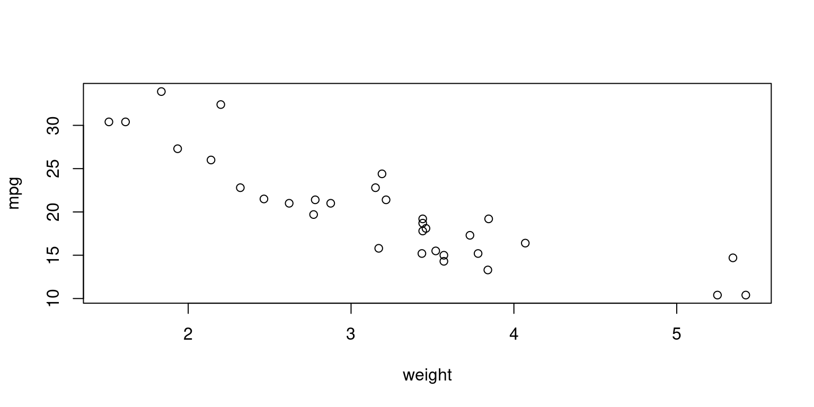
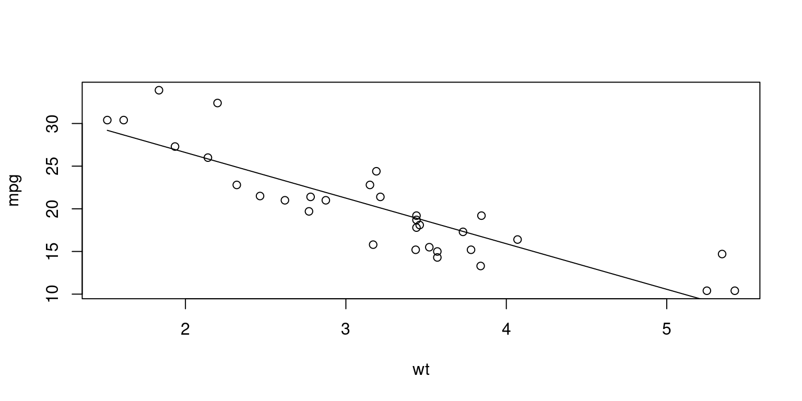

data(mtcars)
attach(mtcars)Log-Linear Regression
April 02, 2024
Overview
We use log-linear regression as a statistical technique to model the relationship between a dependent variable and one or more independent variables. This is done by applying a logarithmic transformation to the dependent variable. This approach is especially useful when dealing with non-linear relationships or when the dependent variable is strictly positive and can vary over a wide range.
Purpose
- Handle Asymmetry: It’s often utilized when the dependent variable has a skewed distribution. The logarithmic transformation can help stabilize variance and make the relationship more linear.
- Multiplicative Effects: It models the relationship between the variables in a multiplicative manner rather than an additive one.
Model Form
The general form of a log-linear regression model can be expressed as follows:
\[\begin{equation} \log(Y) = \beta_0 + \beta_1X_1 + \beta_2X_2 + ... + \beta_nX_n + \epsilon \end{equation}\]
Where: - \(Y\) is the dependent variable (after applying the logarithm).
\(X_1, X_2, ..., X_n\) are the independent variables.
\(β_0, β_1, ..., β_n\) are the coefficients that the regression model will estimate.
\(ε\) is the error term.
Assumptions
In log-linear regression, like other forms of regression analysis, we make several key assumptions:
Linearity: The relationship between the transformed dependent variable and the independent variables is linear.
Independence: Observations are independent from each other.
Homoscedasticity: The variance of the error terms is constant across the values of the independent variables.
Normal Distribution of Errors: The errors are normally distributed, which is especially important for hypothesis testing.
Advantages
- Flexibility: Can handle a wide range of dependent variable values.
- Interpretability: Coefficients can be interpreted as percentage changes, which makes it easier for us to understand the impact of independent variables.
Disadvantages
- Transformation Bias: The transformation of the dependent variable might introduce bias.
- Outliers: Logarithmic transformation can make the model sensitive to outliers in the data.
MODEL 1: Base Model
- Reading the data
- Predict a mpg of car from their weight
Plot mpg and wt
plot(wt
, mpg
, xlab="weight", ylab="mpg")
Simple Linear Regression
fit <- lm(mpg ~ wt, data = mtcars)
summary(fit)
Call:
lm(formula = mpg ~ wt, data = mtcars)
Residuals:
Min 1Q Median 3Q Max
-4.5432 -2.3647 -0.1252 1.4096 6.8727
Coefficients:
Estimate Std. Error t value Pr(>|t|)
(Intercept) 37.2851 1.8776 19.858 < 2e-16 ***
wt -5.3445 0.5591 -9.559 1.29e-10 ***
---
Signif. codes: 0 '***' 0.001 '**' 0.01 '*' 0.05 '.' 0.1 ' ' 1
Residual standard error: 3.046 on 30 degrees of freedom
Multiple R-squared: 0.7528, Adjusted R-squared: 0.7446
F-statistic: 91.38 on 1 and 30 DF, p-value: 1.294e-10- Plot
plot(mtcars$wt,
mtcars$mpg,
main="",
xlab="wt",
ylab="mpg")
lines(mtcars$wt, fitted(fit))
Beta coefficients
fit$coefficients(Intercept) wt
37.285126 -5.344472 Predict
We can list the predicted values in a fitted model
fitted(fit) Mazda RX4 Mazda RX4 Wag Datsun 710 Hornet 4 Drive
23.282611 21.919770 24.885952 20.102650
Hornet Sportabout Valiant Duster 360 Merc 240D
18.900144 18.793255 18.205363 20.236262
Merc 230 Merc 280 Merc 280C Merc 450SE
20.450041 18.900144 18.900144 15.533127
Merc 450SL Merc 450SLC Cadillac Fleetwood Lincoln Continental
17.350247 17.083024 9.226650 8.296712
Chrysler Imperial Fiat 128 Honda Civic Toyota Corolla
8.718926 25.527289 28.653805 27.478021
Toyota Corona Dodge Challenger AMC Javelin Camaro Z28
24.111004 18.472586 18.926866 16.762355
Pontiac Firebird Fiat X1-9 Porsche 914-2 Lotus Europa
16.735633 26.943574 25.847957 29.198941
Ford Pantera L Ferrari Dino Maserati Bora Volvo 142E
20.343151 22.480940 18.205363 22.427495 Residuals
Residuals are the vertical distances between the data and the fitted line. The Ordinary Least Squares (OLS) method minimizes the residuals. In OLS, the accuracy of a line through the sample data points is measured by the sum of squared residuals, and the goal is to make this sum as small as possible.
residuals(fit) Mazda RX4 Mazda RX4 Wag Datsun 710 Hornet 4 Drive
-2.2826106 -0.9197704 -2.0859521 1.2973499
Hornet Sportabout Valiant Duster 360 Merc 240D
-0.2001440 -0.6932545 -3.9053627 4.1637381
Merc 230 Merc 280 Merc 280C Merc 450SE
2.3499593 0.2998560 -1.1001440 0.8668731
Merc 450SL Merc 450SLC Cadillac Fleetwood Lincoln Continental
-0.0502472 -1.8830236 1.1733496 2.1032876
Chrysler Imperial Fiat 128 Honda Civic Toyota Corolla
5.9810744 6.8727113 1.7461954 6.4219792
Toyota Corona Dodge Challenger AMC Javelin Camaro Z28
-2.6110037 -2.9725862 -3.7268663 -3.4623553
Pontiac Firebird Fiat X1-9 Porsche 914-2 Lotus Europa
2.4643670 0.3564263 0.1520430 1.2010593
Ford Pantera L Ferrari Dino Maserati Bora Volvo 142E
-4.5431513 -2.7809399 -3.2053627 -1.0274952 Statistical Significance and p-values
The regression coefficient (3.45) is significantly dfferent from zero (p < 0.001)
There is an expected increase of 3.45 lbs of weight for every 1 inch increases in height.
Fit
We can get the Multiple R-squared
# Summary of the model to get various statistics
model_summary <- summary(fit)
# Extracting Multiple R-squared value
model_summary$r.squared [1] 0.7528328We can also get the Adjusted R-squared
# Extracting Adjusted R-squared value
model_summary$adj.r.squared[1] 0.7445939Confidence Intervals
We can compute Confidence Interval for a prediction.
newdata = data.frame(wt = 4)
predict(fit,
newdata,
interval = "confidence") fit lwr upr
1 15.90724 14.49018 17.32429F-Statistic
The F-statistic tests whether the predictor variables, taken together,predict the response variable.
MODEL 2: Log-Linear Model
Model 2 employs a log-linear regression approach to understand the relationship between the weight (wt) of cars and their fuel efficiency (mpg) in the mtcars dataset. Unlike a simple linear regression model which predicts mpg directly from wt, this model predicts the logarithm of mpg based on wt. This transformation allows us to model a multiplicative relationship between the dependent and independent variables, which can be more appropriate for certain types of data and relationships.
fit2 <- lm(log(mpg) ~ wt, data = mtcars)
summary(fit2)
Call:
lm(formula = log(mpg) ~ wt, data = mtcars)
Residuals:
Min 1Q Median 3Q Max
-0.210346 -0.085932 -0.006136 0.061335 0.308623
Coefficients:
Estimate Std. Error t value Pr(>|t|)
(Intercept) 3.83191 0.08396 45.64 < 2e-16 ***
wt -0.27178 0.02500 -10.87 6.31e-12 ***
---
Signif. codes: 0 '***' 0.001 '**' 0.01 '*' 0.05 '.' 0.1 ' ' 1
Residual standard error: 0.1362 on 30 degrees of freedom
Multiple R-squared: 0.7976, Adjusted R-squared: 0.7908
F-statistic: 118.2 on 1 and 30 DF, p-value: 6.31e-12Model Output and Interpretation
The output of the model can be summarized and interpreted as follows:
Residuals
The residuals, or differences between the observed and predicted values of log(mpg), have a median close to zero (-0.006136), indicating that the model’s predictions are, on average, accurate. The range of residuals from the minimum (-0.210346) to the maximum (0.308623) suggests that most predictions are within this range of the actual log values.
Coefficients
Intercept (3.83191): This value indicates the expected value of
log(mpg)whenwtis 0. It’s a theoretical intercept since a car’s weight cannot be zero, but it helps anchor the regression line.Weight (wt) Coefficient (-0.27178): This coefficient represents the expected change in
log(mpg)for a one-unit increase in car weight. Specifically, for each one-unit increase in weight,log(mpg)is expected to decrease by 0.27178 units. This negative relationship suggests that heavier cars tend to have lower fuel efficiency.
Significance
The p-values for both the intercept and weight coefficient are well below the standard thresholds (e.g., 0.05, 0.01), indicating that these coefficients are statistically significant and that weight is a meaningful predictor of log(mpg).
Model Fit
Residual Standard Error (RSE): 0.1362 on 30 degrees of freedom indicates the average amount by which the predicted values deviate from the actual values.
Multiple R-squared (0.7976): This statistic indicates that approximately 79.76% of the variability in
log(mpg)can be explained by the model. It’s a measure of the model’s goodness of fit.Adjusted R-squared (0.7908): This adjusts the R-squared value for the number of predictors in the model and suggests that after adjustment, about 79.08% of the variability in
log(mpg)is explained by the model.F-statistic (118.2): This value tests the overall significance of the model. The very low p-value (6.31e-12) associated with the F-statistic indicates that the model is statistically significant.
Interpretation of the Beta Coefficient
The beta coefficient for wt in our log-linear regression model is -0.27178. This statistic tells us about the relationship between a car’s weight and its fuel efficiency (mpg), with the mpg being logarithmically transformed.
In practical terms, a one-unit increase in a car’s weight is associated with a decrease of 0.27178 in the log of its mpg. This relationship is multiplicative due to the log transformation of the mpg variable.
To understand the impact of this coefficient in more intuitive terms, we can use the mathematical operation exp(-0.27178):
exp(-0.27178)[1] 0.7620219This calculation gives us approximately 0.762, or 76.2%.
This figure can be interpreted as follows: for every one-unit increase in weight, the fuel efficiency of a car is expected to be about 76.2% of what it would be if it were one unit lighter, all else being equal.
This means that the heavier car’s fuel efficiency is 76.2% of the lighter car’s efficiency, representing a significant decrease in efficiency due to the increase in weight.
Hence, the beta coefficient of -0.27178 signifies a strong negative impact of weight on a car’s fuel efficiency, illustrating that as a car’s weight increases, its fuel efficiency substantially decreases, when other factors are held constant.
Another Log-Linear Model
We present two regression models, Model 3a (Linear-Linear Model) and Model 3b (Log-Linear Model), using the mtcars dataset. Both models aim to predict the miles per gallon (mpg) of cars based on their weight (wt) and transmission type (am, with levels “Automatic” and “Manual”).
Model 3a - Linear-Linear Model
# Convert am to a factor variable
mtcars$am <- factor(mtcars$am, labels = c("Automatic", "Manual"))
fit3a <- lm((mpg) ~ wt + am, data = mtcars)
summary(fit3a)
Call:
lm(formula = (mpg) ~ wt + am, data = mtcars)
Residuals:
Min 1Q Median 3Q Max
-4.5295 -2.3619 -0.1317 1.4025 6.8782
Coefficients:
Estimate Std. Error t value Pr(>|t|)
(Intercept) 37.32155 3.05464 12.218 5.84e-13 ***
wt -5.35281 0.78824 -6.791 1.87e-07 ***
amManual -0.02362 1.54565 -0.015 0.988
---
Signif. codes: 0 '***' 0.001 '**' 0.01 '*' 0.05 '.' 0.1 ' ' 1
Residual standard error: 3.098 on 29 degrees of freedom
Multiple R-squared: 0.7528, Adjusted R-squared: 0.7358
F-statistic: 44.17 on 2 and 29 DF, p-value: 1.579e-09This model directly predicts mpg from wt and the type of transmission (am), treating am as a factor variable.
Output Interpretation:
Coefficients:
The intercept, 37.32155, suggests the expected
mpgfor an automatic transmission car (baseline category) with a weight of 0, which is a hypothetical scenario serving as a reference point.The
wtcoefficient of -5.35281 indicates that for each additional unit of weight,mpgdecreases by approximately 5.35, holding the type of transmission constant.The
amManualcoefficient of -0.02362 suggests a negligible and statistically insignificant change inmpgfor manual cars compared to automatic ones, holding weight constant.
Model Fit: The Multiple R-squared value of 0.7528 suggests that approximately 75.28% of the variability in
mpgcan be explained by the model. The Adjusted R-squared value of 0.7358 adjusts this for the number of predictors and indicates a strong model fit.
MODEL 3b: Another Log-Linear Model
fit3b <- lm(log(mpg) ~ wt + am, data = mtcars)
summary(fit3b)
Call:
lm(formula = log(mpg) ~ wt + am, data = mtcars)
Residuals:
Min 1Q Median 3Q Max
-0.21351 -0.08281 0.00304 0.04962 0.32349
Coefficients:
Estimate Std. Error t value Pr(>|t|)
(Intercept) 3.89834 0.13567 28.734 < 2e-16 ***
wt -0.28699 0.03501 -8.198 4.87e-09 ***
amManual -0.04307 0.06865 -0.627 0.535
---
Signif. codes: 0 '***' 0.001 '**' 0.01 '*' 0.05 '.' 0.1 ' ' 1
Residual standard error: 0.1376 on 29 degrees of freedom
Multiple R-squared: 0.8003, Adjusted R-squared: 0.7865
F-statistic: 58.1 on 2 and 29 DF, p-value: 7.186e-11This model predicts the log of mpg from wt and the type of transmission (am), again treating am as a factor variable.
Output Interpretation:
- Coefficients:
The intercept, 3.89834, is the expected value of log(
mpg) for an automatic transmission car with a weight of 0.The
wtcoefficient of -0.28699 suggests that for each additional unit of weight, the log ofmpgdecreases by approximately 0.287, indicating a strong negative relationship between weight andmpg, after controlling for transmission type.The
amManualcoefficient of -0.04307 is not statistically significant (p=0.535), indicating that, after controlling for weight, the difference in log(mpg) between manual and automatic cars is negligible.
- Model Fit: The model has a Multiple R-squared of 0.8003, showing that it explains about 80.03% of the variability in log(
mpg), which is an improvement over Model 3a. The Adjusted R-squared of 0.7865 indicates a strong fit to the data.
Exponential Interpretations:
- exp(-0.04307) = 0.9578443:
This value implies that, all else being equal, the mpg of automatic cars is expected to be approximately 95.78% of that of manual cars.
Given the statistical insignificance of the amManual coefficient, this difference is not considered meaningful in the context of this model.
- exp(-0.2869) = 0.7505868:
This exponentiated coefficient translates to a more intuitive interpretation for the wt variable. It suggests that for each one-unit increase in weight, the mpg is expected to be multiplied by approximately 0.75, holding the transmission type constant. This represents a substantial decrease in fuel efficiency with increased weight.
Comparison
Both models provide valuable insights into the factors affecting mpg.
Model 3a highlights a strong negative relationship between mpg and wt, with the type of transmission (am) showing no significant effect when modeled linearly.
Model 3b, with its log-linear approach, not only confirms the strong negative impact of weight on mpg but also offers a slightly better fit to the data as indicated by the higher adjusted R-squared value.
The lack of a significant effect from the transmission type is consistent across both models. The log-linear model’s ability to better account for the variability suggests that the relationship between mpg and wt might be more appropriately modeled on a multiplicative (logarithmic) scale.